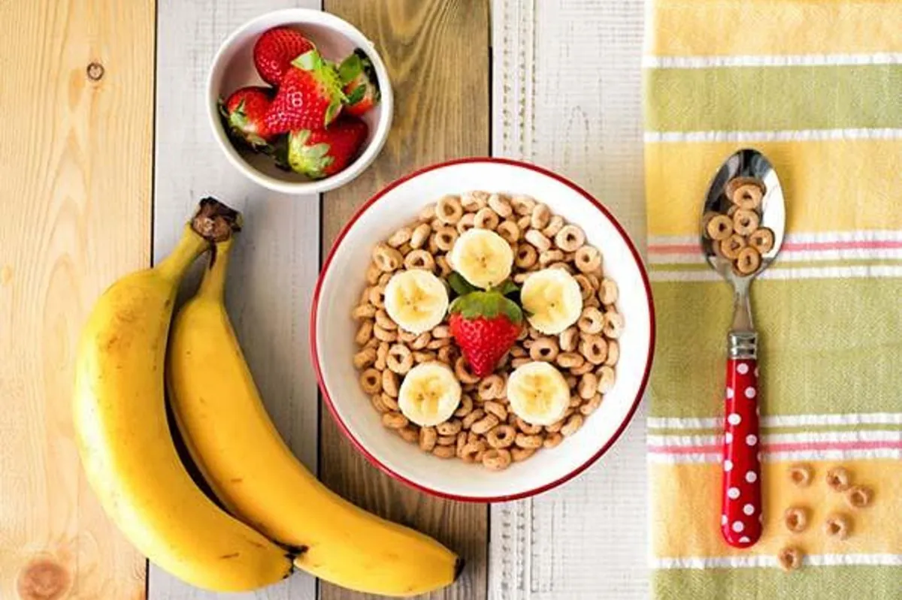

Is your breakfast cereal healthy?
A new study looks at the nutritional value of popular breakfast cereals — maybe the one you’re eating right now.
December 15, 2025

A new study examines the nutritional value of popular breakfast cereals — maybe the one you're eating right now.
Published By: Noël Bryant, B.A.
I gotta admit something: I love cereal. Like… really love cereal.
Growing up, cereal wasn’t just breakfast — it was a lifestyle. A bowl in the morning, then another one after dinner like it was dessert. Raisin Bran, Cinnamon toast Crunch, Honey Bunches of Oats — heavy rotation. And if there was milk left in the bowl? You already know the move: pour in more cereal until everything is gone. No leftovers. To this day, cereal still ranks high on my favorite foods list.
Part of the obsession comes from how cereal has always been marketed. It’s sold as the “healthy” option. But a 2025 study that looked at over 600 breakfast cereals tells a different story — especially when it comes to some of the biggest, most popular brands. So… how healthy is cereal, really?
Short answer: not as healthy as we’ve been led to believe.
A lot of the top-name cereals are loaded with sugar, light on protein (unless you count the milk), packed with additives, and don’t bring much else to the table. Some don’t even deliver on fiber — which is supposed to be cereal’s main selling point. And those 120–150 calories listed on the box? Yeah… that’s for a “serving size” most people don’t actually eat. Real-life bowls (mine included) can easily creep past 300 calories without breaking a sweat.
Then there are the bold claims on the front of the box: “heart healthy,” “high in vitamins,” “all natural,” “part of a healthy breakfast.” Sounds good — but research shows those claims don’t always match what’s actually inside. In many cases, whatever nutrition you’re getting comes from the milk you pour on top, not the cereal itself. !Cereal culture is real!
And let’s be clear — I’m not alone. In the U.S., more than a quarter of kids and teens eat ready-to-eat cereal most days of the week. About half of adults still reach for it at least once or twice a week. Star athletes smile from cereal boxes, and celebrities like Shaquille O'neal and Hailee Steinfeld, have openly professed their love for it. Cereal isn’t just food — it’s culture. But it might be time we stop taking the box’s word for it and start looking a little closer at what we’re really pouring into our bowls. 🥣
Let’s talk about the usual suspects:
Cheerios
Frosted Flakes
Honey Nut Cheerios
Honey Bunches of Oats
Cinnamon Toast Crunch
Froot Loops
Lucky Charms
These cereals stay winning in sales, but nutrition-wise? Not so much. Most of them are sweet-heavy, ultra-processed, and stacked with empty calories. Yeah, some toss in a few vitamins, but usually not enough to move the needle. Others sneak in sodium you didn’t ask for. The playbook is always the same: hype the fiber, ignore the sugar and calories. And cutting artificial colors or flavors doesn’t magically turn these into health food. Sugar in disguise is still sugar. “But cereal’s getting healthier now, right?”
Nah — actually the opposite.
A study published in May 2025 looked at 1,200 kid-targeted cereals that were new or “reformulated” between 2010 and 2023. The trend? More fat, more salt, more sugar… and less protein and fiber. Basically, louder marketing and weaker nutrition. The good news: change is slowly coming. New USDA school breakfast guidelines are pushing cereal makers to cut back on sugar and sodium while boosting whole grains. It’s a step in the right direction — just not there yet.
So what’s a cereal lover supposed to do?
Let’s be real — we can do better than bowls of sugar dressed up as breakfast, especially when kids are the main target. The easiest move is switching it up: oatmeal with fruit and nuts, eggs, yogurt with fruit, or peanut butter on whole-grain toast all bring real fuel to the table.
But if boxed cereal is still your go-to (no judgment), shop smarter. Flip the box around and look for:
- Whole grain listed first
- At least 2.5g of fiber per serving (5g is even better)
- Little to no added sugar or sodium
- 150 calories or less per serving — and actually measure it (most servings are ¾ to 1 cup, way smaller than a real bowl)
- A short ingredient list with stuff that sounds like food, not chemistry class
Solid options that check most of those boxes include:
Shredded Wheat
Kashi Go Lean
Cheerios, and
All-Bran.
Bottom line
If you love ready-to-eat cereal, it’s not the worst habit — especially if you pair it with skim or high-protein non-dairy milk. Just be picky and watch your portions. Breakfast should power you up, not just give you a sugar rush wrapped in crunch and cartoons. 🥣